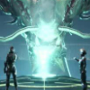

vertical-align垂直对齐属性：
一个

默认对齐的图像。一个 text-top 对齐的图像。
一个text-bottom 对齐的图像。
一个 center 对齐的图像。
text-overflow属性:鼠标移动到框内，查看效果.
word-break属性:
This paragraph contains some text. This line will-break-at-hyphenates.
This paragraph contains some text: The lines will break at any character.
word-wrap属性:
This paragraph contains a very long word: thisisaveryveryveryveryveryverylongword.